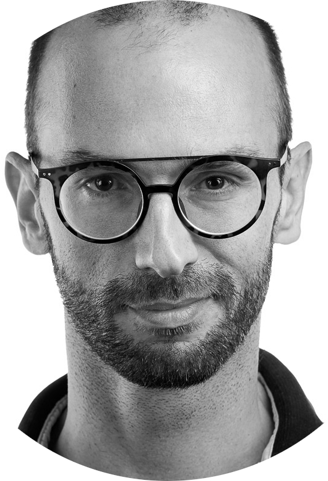

Dear Mr. Taylor,
I am interested in the Technical Lead, CMS Backend position. I saw it on Tamedia’s careers page, and I am writing to you as Head of Software Engineering.
I like systems people rely on every day. Unity is that for Tamedia’s newsrooms: your own CMS, with years of history in the code, and a backend that makes the next editorial workflow easier to ship. That is the ownership I want.
I lead from inside the work. I hire with care, I coach engineers in the code, and I keep a real share of the design and the implementation myself. When production is under pressure I stay calm, I own the follow-up, and I keep the team on the next clear step. Looking after the people and looking after the system are the same job for me.
A team across Zürich and Belgrade is a good fit for how I lead. I have led multicultural engineers, and I coach in the open: a decision written down, a standard the whole team can use, and time for someone who needs it. I live in Zürich. I am glad to be in the office on a hybrid week, and English is the language I lead in.
I would welcome a conversation.
Kind regards,
Georgios Valotasios